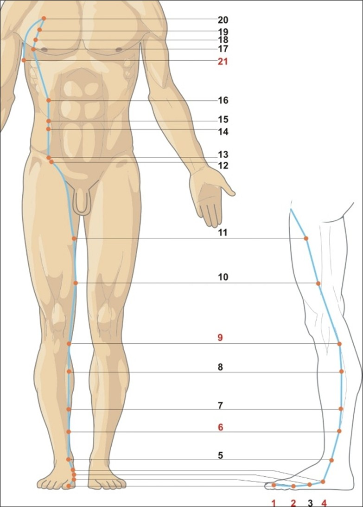

Fereastra digestiei și a clarității mentale
Splina-pancreas atinge potențialul maxim între 09:00 – 11:00, momentul optim pentru digestia micului dejun și pentru activități care necesită gândire analitică, memorie și concentrare. Oboseala accentuată la această oră, balonarea sau senzația de ceață mentală indică un deficit de Qi al Splinei.
Energie, ore & elemente asociate
☯Tip energetic
- Yin Mare — Zu Taiyin (足太阴): Mai marele Yin al piciorului. Splina este centrul digestiei și al transformării, rădăcina producerii Qi-ului și sângelui postnatal.
- Meridian pereche: Stomacul (Zu Yangming 足阳明). Cuplul Pământ: Splina transformă și transportă, Stomacul „putrezește și maturizează” alimentele. Împreună asigură hrănirea organismului.
- Spirit: Yi (意) — gândirea, intenția, memoria de scurtă durată, capacitatea de a analiza și de a studia. Un Yi clar dă capacitate de învățare și de planificare.
- Organ de simț asociat: Buzele (culoarea, umiditatea, sensibilitatea). Buzele palide și uscate indică deficit al Splinei.
🌾Element Pământ (土) — Hrănirea și centrul
- Direcție: Centru | Anotimp: Sfârșitul verii (sau fiecare schimb de anotimp)
- Climat: Umezeala | Culoare: Galben
- Gust: Dulce | Sunet: Cântatul
- Emoție: Gândirea excesivă, grija, ruminația (în dezechilibru); echilibru, încredere, deschidere (în armonie)
- Țesuturi: Mușchii (tonusul muscular, membrele), țesutul conjunctiv, ligamentele
- Funcții speciale: Splina guvernează sângele (menține sângele în vase), controlează imunitatea (producția de limfocite), reglează metabolismul apei și al glucozei.
🕐Ceasul organic — 24 h
- Înainte — Stomacul (ST): 07:00–09:00. Receptarea și „putrezirea” alimentelor, pregătirea pentru extragerea nutrienților.
- Splina-pancreas (SP): 09:00–11:00. Fereastra extracției și asimilării nutrienților, a gândirii analitice și a memoriei. Ideal pentru învățare, studiu și muncă intelectuală.
- După — Inima (HT): 11:00–13:00. Sângele și circulația preiau nutrienții asimilați.
- Semnificație clinică: Balonarea sau diareea dimineața târziu = deficit de Qi al Splinei. Senzația de ceață mentală între 9-11 = umiditate care obturează orificiile. Foamea excesivă la această oră = căldură în stomac.
GB
LV
LU
LI
胃
脾
HT
SI
BL
KD
心包
TW
Traseu & anatomie energetică

Pe partea medială a degetului mare, 0.1 cun proximal de unghie. Punctul de pornire al meridianului.
SP-2 anterior articulației metatarsofalangiene I. SP-3 posterior aceleiași articulații (Yuan-Sursă). SP-4 la baza primului metatarsian (Luo al Splinei, cheia Chong Mai).
SP-5 anterior maleolei mediale. SP-6 la 3 cun deasupra maleolei (întâlnirea celor 3 Yin). SP-7 la 6 cun.
SP-8 la 3 cun sub SP-9 (Xi-Fisură). SP-9 sub condilul medial al tibiei (He-Mare). SP-10 la 2 cun deasupra rotulei (Marea Sângelui).
Traiectul abdominal la 3.5–4 cun lateral de linia mediană, intersectând meridianul Rinichi și Vasul Concepție.
În spațiile intercostale 5–2, pe linia axilară anterioară până la linia axilară medie. SP-21 în al 6-lea spațiu intercostal, pe linia axilară medie — Marele Luo al Splinei.
🔗Conexiuni interne profunde
- Originea în deget și legătura cu stomacul: Meridianul pornește de la halux, urcă pe gambă și coapsă, apoi pătrunde în abdomen, conectându-se cu stomacul și splina. O ramură internă înfășoară stomacul în spirală.
- Ramura către inimă: O ramură internă urcă de la stomac la inimă, reflectând legătura dintre digestie și emoții (de exemplu, „nod în stomac” din anxietate).
- Conexiunea cu limba și gâtul: Un traseu urcă de-a lungul esofagului, ajunge la baza limbii — explică influența Splinei asupra gustului și vorbirii.
- Întâlnirea cu Vasul Concepție (CV): Pe traiectul abdominal, SP se întâlnește cu CV-3, CV-4, CV-10, CV-12, facilitând reglarea digestiei și a Qi-ului central.
- Marele Luo al Splinei (SP-21): Acest punct special se conectează cu toate meridianele și armonizează energia întregului corp — „Marele învăluitor”.
Rol: „Ministerul grânelor" — funcții fiziologice
🍚Extracția și asimilarea nutrienților
Splina și pancreasul extrag elementele nutritive din alimente și fluide prin enzime digestive. Qi-ul Splinei transportă nutrienții în sus către plămâni și inimă pentru a forma Qi-ul și sângele. „Splina este fundamentul Qi-ului postnatal”.
🩸Guvernarea sângelui
Splina menține sângele în vase, prevenind hemoragiile (epistaxis, hematemeze, menoragie, echimoze spontane). De asemenea, produce sânge din nutrienții extrași.
💧Transformarea și transportul fluidelor
Splina separă lichidele pure de cele impure, trimitându-le la plămâni și rinichi. Disfuncția produce flegmă, umezeală, edeme și diaree.
💪Controlul mușchilor și membrelor
Splina hrănește mușchii și menține tonusul muscular. Oboseala musculară, atrofia sau senzația de greutate în membre sunt semne de deficit al Splinei.
🧠Găzduirea gândirii (Yi)
Yi-ul (gândirea, intenția, memoria de scurtă durată) este aspectul mental al Splinei. O Splină armonioasă dă claritate mentală, capacitate de analiză și de studiu. Excesul de gândire slăbește Splina.
🛡️Controlul imunității și al țesutului limfatic
Splina produce limfocite și anticorpi, participă la răspunsul imun. Splenomegalia sau imunitatea scăzută sunt legate de dezechilibru energetic.
Blocaje & indicații terapeutice
⚠️Tipare patologice principale
- Deficiență de Qi al Splinei: Oboseală, lipsă de poftă de mâncare, balonare după mese, scaune moi sau diaree, ten palid, buze palide, prolaps (uterin, rectal), senzație de greutate în membre.
- Deficiență de Yang al Splinei (frig): Ca mai sus, plus senzație de frig la nivelul abdomenului și membrelor, edeme, scaune apoase, intoleranță la alimente reci.
- Umezeală stagnantă (flegmă): Senzație de greutate în cap, ceață mentală, secreții vaginale abundente, piele umedă, limbă cu depuneri groase, diaree cronică.
- Căldură umedă în Splină: Icter, senzație de căldură și greutate în abdomen, scaune diareice galbene și maleabile, limbă roșie cu depunere galbenă, sete moderată.
- Stază de sânge în Splină: Splenomegalie, dureri abdominale fixe, sângerări în peteșii sau vânătăi, menstruație neregulată.
- Manifestări pe traiect: Dureri și parestezii pe traiectul intern al piciorului (de la halux la coapsă), dureri toracice laterale (SP-17–21).
🏥Indicații terapeutice generale
- Digestive: Gastrită cronică, ulcer, dispepsie, sindrom de colon iritabil, diaree cronică, constipație, balonare, greață, vărsături.
- Metabolice: Diabet zaharat tip 2, obezitate, edeme, retenție de lichide.
- Hematologice: Anemie, purpură trombocitopenică, tendință la hemoragii, menoragie, metroragie.
- Imunitare: Imunitate scăzută, răceli frecvente, alergii, boli autoimune (complementar).
- Musculo-scheletice: Slăbiciune musculară, atrofie, mialgii, senzație de greutate la membre, dureri de genunchi și coapsă.
- Psihice: Gândire excesivă, ruminație, insomnie din cauza grijilor, memorie slabă, dificultăți de concentrare, anxietate, depresie.
Yi — gândirea, intenția și memoria de scurtă durată
Splina găzduiește Yi-ul (意), aspectul mental responsabil pentru gândirea analitică, procesarea informațiilor, memoria de scurtă durată și capacitatea de a forma intenții. O Splină armonioasă oferă minte clară, capacitate de învățare și de a duce planurile la bun sfârșit. În dezechilibru, apar grijile excesive, ruminația, obsesiile și senzația de minte încețoșată.
Atribute psiho-emoționale ale Splinei
✅Atribute pozitive — Splină în armonie
- Încredere, onestitate, deschidere, acceptare
- Calm, echilibru, imparțialitate, răbdare
- Gândire analitică clară, memorie bună, capacitate de a studia
- Capacitatea de a-și forma intenții și de a le duce la îndeplinire
- Simț al umorului sănătos, fără sarcasm excesiv
⚠️Atribute negative — Splină dezechilibrată
- Grijă excesivă, ruminație, gândire obsesivă
- Remușcări, regret, îndoială de sine
- Confuzie, gândire lentă, împrăștiată
- Dogmatism, fixații, exces de zel
- Autocompătimire, sentiment de nesiguranță, tristețe nemotivată
- Dificultate de a lua decizii („paralizie prin analiză”)
Manifestări psihice în funcție de tipul energetic
↓Deficit de Qi / Yang — Grijă cronică · Minte încețoșată
Confuzie, gândire lentă, împrăștiată, probleme de memorare, idei fixiste, dogmatism, exces de zel, autocompătimire, sentiment de nesiguranță, tristețe nemotivată, imposibilitate de adaptare. Persoana este supraponderală sau cu metabolism lent, pofticioasă, cu voință slabă, mult prea grijulie, ține totul pentru sine. Are senzația de dezrădăcinare, nivelul de energie fluctuează, se adâncește în amănunte inutile, se autocompătimește și e sigură că toate strădaniile sale sunt în zadar.
↑Exces de căldură umedă sau stagnare — Minte agitată · Obsesii
Iritabilitate, tensiune nervoasă, asumarea a prea multe responsabilități, alergătură continuă, furie, puțin somn, planificare excesivă, mișcări nesigure. Persoana poate fi supraponderală, pofticioasă, cu voință slabă, dar paradoxal hiperactivă. Compasiune și simpatie duse la extrem, bârfe compulsive. În exces sever: halucinații, coșmaruri, anxietate severă.
Dinamica arhetipală: Splina & relația cu părinții
👪Relația cu principiul matern (Yin) — hrănirea emoțională
- Armonie: Capacitate de a „asimila” iubirea și suportul emoțional. Sentiment de a fi hrănit, acceptat și în siguranță. Relație sănătoasă cu hrana și cu propria valoare.
- Dezechilibru ușor: Nevoie de reasigurare, tendința de a se îngrijora excesiv pentru ceilalți. Ușoară dificultate în a primi ajutor.
- Dezechilibru moderat: Dificultăți în a se „hrăni” emoțional și a asimila suport din relații. Tendința de a reține grijile și obsesiile, de a se simți copleșit de emoțiile materne sau de lipsa de suport din partea figurii materne. Relație nesatisfăcătoare cu propria mamă, adesea cu sentimentul de a nu fi fost suficient de „hrănit” emoțional.
- Dezechilibru sever: Traumă profundă legată de respingerea sau abandonul matern. Incapacitatea de a primi iubire și de a te lăsa hrănit emoțional. Poftă emoțională cronică (compensată prin mâncare excesivă sau restricție).
Observație: Splina (Pământul) este asociată cu mama și cu hrănirea fundamentală. Relația cu tatăl este guvernată mai degrabă de Plămân (Metal) sau de Rinichi (Apă).
Instrument de evaluare a meridianului Splină-Pancreas
Glisați pe bara colorată sau utilizați meniul dropdown pentru a selecta starea energetică. Profilul complet — fiziologic, nutrițional, emoțional și terapeutic — se afișează imediat. Corelați cu măsurătorile de biorezonanță și cu istoricul digestiv, ponderal și de gândire excesivă.
Evaluare energetică — Meridian Splină-Pancreas (SP)
Selectați nivelul observat: glisați pe bară, trageți indicatorul sau utilizați meniul.
Meridianul Splină-Pancreas (Zu Taiyin) — 21 puncte SP
Tabel complet cu localizare de precizie, categorie energetică (sistemul Shu-Antice), funcții principale și indicații terapeutice detaliate. Punctele cu ⭐ sunt de uz frecvent în clinică și autoterapie. SP-6 (Sanyinjiao) este un punct universal pentru tonifierea Yin-ului.
| Punct | Localizare | Categorie | Funcții principale | Indicații detaliate |
|---|---|---|---|---|
| SP-1Yinbai 隐白 · Yinul alb | Pe partea medială a halucelui, 0.1 cun proximal de unghie. | Jing-Puț (井) | Oprește sângerarea uterină, trezește conștiința, calmează convulsiile. | Menoragie, metroragie, hemoragii postpartum, insomnie, coșmaruri, convulsii infantile, agitație, hernie, distensie abdominală. ⭐ Punct de urgență pentru sângerări uterine. |
| SP-2Dadu 大都 · Marele oraș | Anterior articulației metatarsofalangiene I, la granița dorsal-plantară. | Ying-Izvor (荥) | Elimină căldura din stomac și splină, tratează febra fără transpirație. | Febră fără transpirație, durere epigastrică, constipație, diaree, vomă, sete, edeme ale piciorului, crampe musculare. |
| SP-3Taibai 太白 · Marele alb | Posterior articulației metatarsofalangiene I, la baza primului metatarsian. | Shu-Abrupt (输) Yuan-Sursă | Tonifică splina și stomacul, transformă umezeala, reglează Qi-ul central. | Durere epigastrică, distensie abdominală, borborisme, diaree, dizenterie, constipație, greutate corporală, oboseală, durere la genunchi. |
| SP-4Gongsun 公孙 · Strămoșul Chong Mai | La granița dorso-plantară, la jumătatea primului os metatarsian. | Luo al Splinei Cheie Chong Mai | Armonizează stomacul și intestinul, reglează Chong Mai (vasul penetrant). | Durere epigastrică și abdominală, vărsături, acideitate, greață, edem facial, epilepsie, pleurezie, cardită, dureri uterine, hemoragie intestinală, ascită. |
| SP-5Shangqiu 商丘 · Dealul superior | În depresiunea antero-inferioară a maleolei mediale. | Jing-Râu (经) | Elimină căldura și umezeala, reglează căile apei, tratează constipația. | Durere epigastrică, constipație cronică, diaree, hemoroizi, rigiditate a limbii, durere și umflătură a gleznei. |
| SP-6Sanyinjiao 三阴交 · Întâlnirea celor 3 Yin ⭐⭐ | 3 cun deasupra maleolei mediale, pe marginea posterioară a tibiei. | Punct de întâlnire (3 Yin) | Tonifică Yin-ul, hrănește sângele, reglează ciclul menstrual, calmează insomnia. | Toate afecțiunile genitale feminine și masculine (dismenoree, amenoree, infertilitate, leucoree, prolaps, impotență), insomnie, depresie, anxietate, edeme, hipertensiune, enterocolită, hemoroizi. |
| SP-7Lougu 漏谷 · Valea scursă | 6 cun deasupra maleolei mediale, pe marginea posterioară a tibiei. | Punct de drenaj | Transformă flegma-umezeala, reglează stomacul. | Distensie abdominală, borborisme, diaree, greutate a membrelor, pareză, edeme. |
| SP-8Diji 地机 · Pământul țintuit | 3 cun sub SP-9, pe marginea posterioară a tibiei. | Xi-Fisură (郄) | Oprește durerile acute ginecologice, reglează căile apei. | Dismenoree severă, menoragie, leucoree, infertilitate, spermatoree, durere abdominală acută, edeme. |
| SP-9Yinlingquan 阴陵泉 · Izvorul Yin de la șold ⭐ | Sub condilul medial al tibiei, între tibie și muschiul gastrocnemian. | He-Mare (合) | Elimină umezeala-căldură, reglează splina, tratează edemele și incontinența. | Incontinență urinară, retenție urinară, edeme, ascită, cistită, vaginită, leucoree, dureri de genunchi, peritonită, insomnie. |
| SP-10Xuehai 血海 · Marea sângelui ⭐ | 2 cun deasupra marginii superioare a rotulei, pe partea medială a coapsei. | Punct de reglare a sângelui | Răcorește sângele, elimină staza sangvină, tratează bolile de piele. | Dismenoree, menoragie, metroragie, prurit perineal, urticarie, eczeme, psoriazis, acnee, dureri de genunchi, varice. |
| Punctele SP-11 la SP-21 — traiectul coapsei, abdomenului și toracelui — toate situate pe fața medială a coapsei (SP-11), apoi pe abdomen la 3.5–4 cun lateral de linia mediană (SP-12 la SP-16), și pe torace în spațiile intercostale 5–2 (SP-17 la SP-21). Indicații generale: afecțiuni ginecologice, hernii, dureri abdominale, tulburări digestive, tuse, dureri toracice, astm. | ||||
| SP-11Jimen 箕门 · Poarta oportună | 6 cun deasupra SP-10, pe linia mediană a coapsei mediale. | Local | Reglează vezica urinară, tratează incontinența și durerea inghinală. | Disurie, retenție urinară, enurezis, durere în abdomenul inferior, hernie inghinală. |
| SP-12Chongmen 冲门 · Poarta impulsului | La nivelul pliului inghinal, 3.5 cun lateral de linia mediană. | Întâlnire cu KD | Elimină staza de sânge pelvin, tratează hernia și inflamația genitală. | Durere în abdomenul inferior, hernie, umflătură genitală, prurit vulvar, infertilitate. |
| SP-13Fushe 府舍 · Locuința splinei | 0.7 cun medial de SP-12, 4 cun lateral de linia mediană. | Întâlnire cu KD | Armonizează abdomenul inferior, tratează hernia și constipația. | Hernie inghinală, durere suprapubiană, constipație, tensiune abdominală. |
| SP-14Fujie 腹结 · Secțiunea abdominală | 1.3 cun sub SP-15, 4 cun lateral de linia mediană. | Local | Elimină stagnarea alimentară, tratează diareea și borborismele. | Durere abdominală, borborisme, diaree, dizenterie, hernie. |
| SP-15Daheng 大横 · Marea orizontală | 4 cun lateral de centrul ombilicului. | Local | Reglează tranzitul intestinal, elimină umezeala. | Constipație cronică, diaree alternantă, dizenterie, distensie abdominală, obezitate centrală. |
| SP-16Fu'ai 腹哀 · Durerea abdominală | 3 cun deasupra SP-15, 4 cun lateral de linia mediană. | Local | Armonizează stomacul, oprește diareea, tratează indigestia. | Durere abdominală, indigestie, constipație, diaree, dispepsie. |
| SP-17Shidou 食窦 · Orificiul alimentar | Al 5-lea spațiu intercostal, 6 cun lateral de stern (linia axilară anterioară). | Local | Elimină flegma, tratează tusea, astmul și durerea în hipocondru. | Durere în piept și hipocondru, tuse, astm, dispnee, disfagie, mastită. |
| SP-18Tianxi 天溪 · Adăpostul ceresc | Al 4-lea spațiu intercostal, 6 cun lateral de stern. | Local | Reglează lactația, calmează tusea, tratează mastita. | Mastită acută/cronică, hipogalactie, durere toracică, tuse, astm, anxietate. |
| SP-19Xiongxiang 胸乡 · Pieptul călător | Al 3-lea spațiu intercostal, 6 cun lateral de stern. | Local | Elimină căldura din piept, tratează tusea și astmul. | Durere în piept, tuse, astm bronșic, dispnee, senzație de constricție toracică. |
| SP-20Zhourong 周荣 · Prosperitatea din jur | Al 2-lea spațiu intercostal, 6 cun lateral de stern. | Local | Elimină flegma căldură, tratează tusea și durerea costală. | Tuse productivă, astm, durere în piept și hipocondru, flegmă galbenă. |
| SP-21Dabao 大包 · Marele învăluitor | Pe linia axilară medie, în al 6-lea spațiu intercostal (3 cun sub axilă). | Marele Luo al Splinei | Armonizează toate viscerele, elimină staza de Qi, tratează durerea generalizată. | Durere în tot corpul, slăbiciune a membrelor, astm, durere în piept și hipocondru, oboseală cronică, distensie abdominală. |
Protocoale de autoterapie — Elementul Pământ
Tehnicile de mai jos pot fi practicate zilnic fără echipament special. Fereastra optimă pentru practici SP: între 09:00–11:00 (dimineața), când energia splinei este la apogeu, pentru a stimula digestia și claritatea mentală.
Tehnici de acupresură & autoterapie
Masajul SP-6 Sanyinjiao — tonic Yin general ⭐⭐
Apăsați cu policele pe marginea posterioară a tibiei, la 3 degete transverse deasupra maleolei mediale. 1-2 minute pe picior, dimineața și seara. Tonifică Yin-ul, reglează ciclul menstrual, calmează insomnia și anxietatea, tratează problemele digestive.
SP-9 Yinlingquan — eliminarea umezelii
Masaj circular sub condilul medial al tibiei, în depresiunea de pe partea medială a gambei. 1 minut pe picior, după mese. Elimină senzația de greutate, edemele, diareea cu flegmă, leucoreea abundentă.
SP-10 Xuehai — reglarea sângelui și a pielii
Cu genunchiul ușor flexat, masați punctul de pe coapsa medială, la 2 degete deasupra rotulei. 1 minut, de 2 ori pe zi. Tratează afecțiunile ginecologice (dismenoree, menoragie), eczemele, urticaria și pruritul.
Automasaj pe traiectul abdomenului
Cu palma, masați ușor în sensul acelor de ceasornic regiunea abdominală, începând de la ombilic și extinzându-vă spre exterior. 5-10 minute, dimineața sau seara. Stimulează funcția digestivă, reduce balonarea și constipația.
Nutriție pentru Pământ
Tonifiere Qi (deficit): Alimente calde, ușor dulci, ușor digerabile: orez basmati, mei, ovăz, cartof dulce, morcov, dovleac, păstârnac, sfeclă roșie, năut, linte, fasole azuki. Condimente: ghimbir, cardamom, anason, chimen. Eliminare umezeală: Orz, hrișcă, ridichi albă, țelină, sparanghel, ceai de păpădie. Evitați: Alimente reci, crude, lactate în exces, zaharuri rafinate, prăjeli, exces de dulce (slăbește Splina).
Suplimente & fitoterapie SP
Digestie și imunitate: Probiotice (Lactobacillus, Bifidobacterium), enzime digestive (bromelaină, papaină), zinc (15 mg), magneziu (300 mg), complex B. Plante tonice Splină: Astragalus, Codonopsis, Atractylodes (bai zhu), Ginseng (Panax), Jujube (curmale roșii). Eliminare umezeală: Poria (Fu Ling), Coix (yi yi ren). Pentru sânge: Dang Gui (Angelica), Longan (gui yuan). Ceaiuri: Mușețel, fenicul, ghimbir, roiniță.
Qi Gong pentru Pământ — „Râsul interior" și masajul abdominal
Așezat pe scaun, plasați mâinile pe abdomen (una peste alta). Inspirați adânc, umflând abdomenul. La expir, contractați ușor abdomenul și zâmbiți interior. Repetați de 9 ori. Apoi masați abdomenul în sensul acelor de ceasornic. 5-10 minute dimineața. Hrănește Splina, reduce grijile.
Sunetul Pământului — „Gong" (宫)
Inspirați profund. La expir, produceți un sunet profund, gutural „Gonggg..." (ca un sunet de toba mare). Vizualizați o lumină galbenă în zona stomacului și splinei. 9 repetări, zilnic. Sunetul specific Splinei în Qi Gong terapeutic.
Protocol clinic — combinații de acupunctură
🏥Combinații clinice recomandate
- Deficiență de Qi al Splinei (oboseală, balonare, scaune moi): SP-3 (Taibai) + SP-6 (Sanyinjiao) + ST-36 (Zusanli) + CV-12 (Zhongwan) + BL-20 (Pishu) cu moxa.
- Umezeală stagnantă (senzație de greutate, ceață mentală, leucoree): SP-9 (Yinlingquan) + SP-6 + ST-40 (Fenglong) + CV-9 (Shuifen).
- Deficiență de sânge (anemie, menstruație neregulată, insomnie): SP-6 + SP-10 (Xuehai) + CV-4 (Guanyuan) + BL-17 (Geshu).
- Prolaps (uterin, rectal) din deficit de Qi: SP-3 + SP-6 + CV-4 + CV-6 + ST-36 + BL-20 cu moxa.
- Gândire excesivă, ruminație, insomnie din grijă: SP-6 + HT-7 (Shenmen) + PC-6 (Neiguan) + Yin Tang (punct extra).
- Căldură umedă (icter, infecții urinare, leucoree galbenă): SP-9 + SP-6 + LR-2 (Xingjian) + LI-11 (Quchi) + CV-3 (Zhongji).
💬Recomandări psiho-comportamentale — Hrănirea emoțională și liniștirea gândurilor
- Ritualul dimineții (9-11): Consumați un mic dejun cald și ușor (terci de orez, supă cremă). Evitați munca intelectuală intensă imediat după masă; faceți o scurtă plimbare.
- Gestionarea grijilor: Stabiliți un „jurnal al grijilor” — scrieți timp de 10 minute dimineața toate grijile, apoi închideți jurnalul și lăsați-le acolo. Exersați „oprirea gândurilor” („stop” mental).
- Terapie pentru relația cu mama: Lucrul cu nevoia de hrănire emoțională, vindecarea rănilor de abandon sau respingere maternă. Exerciții de „reparentare” interioară.
- Alimentație conștientă: Mâncați în liniște, mestecați temeinic, fără ecrane. Recunoștința pentru hrană hrănește Splina.
- Muzică pentru Pământ: Tonuri de tobe, muzică calmă cu ritm constant, frecvențe 396 Hz, muzică tradițională chineză (guqin).
Indicații de urgență
Hemoragii uterine masive, hematemeză, sângerări digestive active, comă — necesită evaluare medicală de urgență. Acupunctura este complementară. Punctele SP-1 (Yinbai) și SP-10 (Xuehai) pot fi stimulate în caz de menoragie acută ca adjuvant, dar nu înlocuiesc tratamentul alopat.